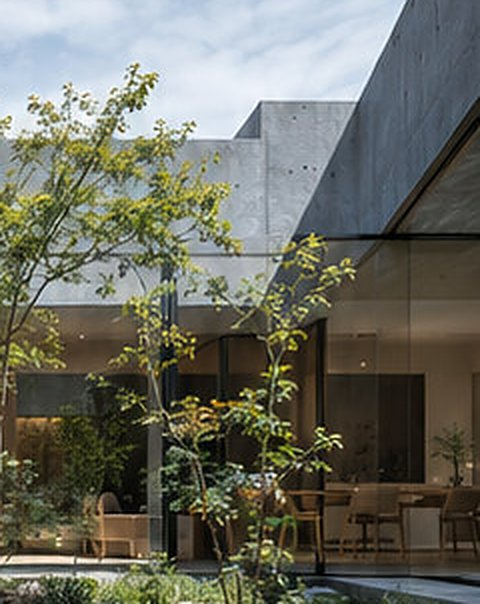
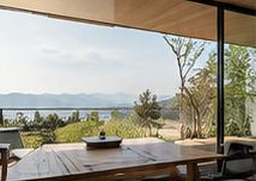
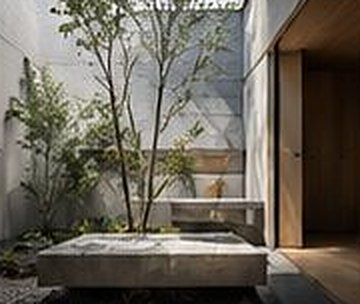
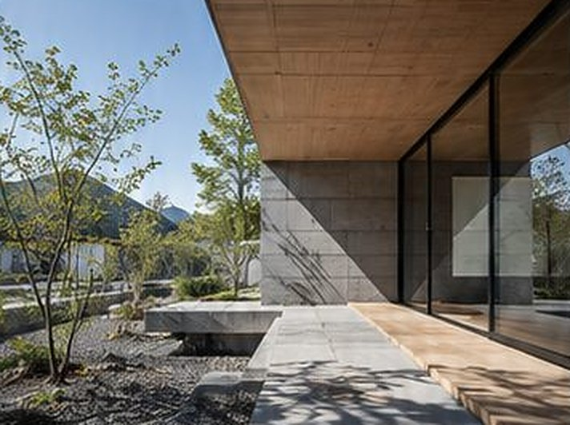
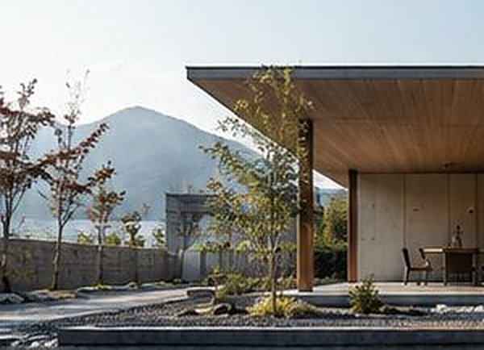

C-00
作品
同じ間取りを二度使ったことはありません。敷地がちがえば、光の入り方も隣との距離もちがうからです。
五つの家を、敷地の読み方がわかる一言と数字でまとめました。
- 図番
- C-00
- 図面名
- 作品
- 縮尺
- 一覧
C-01
敷地ごとに、ちがう家。
住宅地のまんなかから山の裾まで。敷地の種類はばらばらですが、どの家も「何も置かない場所」をひとつ、まんなかに持っています。
-

W-01 中庭から食堂を見るイメージ W-01
中庭と暮らす家
郊外の住宅地 ／ 夫婦ふたり
- 敷地面積
- 168.10㎡
- 延床面積
- 66.25㎡
- 構造
- 木造 平屋
- 竣工
- 2024
北側の道路に対しては閉じ、南に開いた中庭を三方から囲みました。どの部屋からも、一本の木が見えます。
平面図と詳細を見る（C-10） -

W-02 軒下の食卓イメージ W-02
丘の上の家
高台の造成地 ／ 夫婦と子ども二人
- 敷地面積
- 231.40㎡
- 延床面積
- 98.20㎡
- 構造
- 木造 2階建
- 竣工
- 2023
眺めのいい西側は、夏の西日も強い。軒を1,820mm出して、食卓を軒下まで引き出しました。夕食の時間に、ちょうど日が山に入ります。
-

W-03 奥の庭イメージ W-03
路地の家
都市部の路地奥 ／ 夫婦と子ども一人
- 敷地面積
- 72.60㎡
- 延床面積
- 89.40㎡
- 構造
- 木造 2階建
- 竣工
- 2022
三方を隣家に囲まれた細長い敷地。奥に畳三枚ほどの庭をとり、空からの光を一階まで落としています。横に開けない敷地では、上に開きます。
-

W-04 軒下の縁イメージ W-04
軒の深い家
田園の集落 ／ 夫婦と親世帯
- 敷地面積
- 305.00㎡
- 延床面積
- 112.70㎡
- 構造
- 木造 平屋
- 竣工
- 2025
雨の日も窓を開けておきたい、という一言から始まりました。軒下の縁は、濡れずに歩ける外の廊下です。二つの世帯を、この縁がつないでいます。
-

W-05 門の側からイメージ W-05
山裾の家
山あいの緩い斜面 ／ ひとり暮らし
- 敷地面積
- 412.50㎡
- 延床面積
- 84.30㎡
- 構造
- 木造 平屋
- 竣工
- 2025
山から下りてくる夕方の風を、家の真ん中に通しました。門から玄関まで、砂利を踏んで十二歩あります。
※ 作品名・面積・竣工年はすべて架空のものです。写真はイメージです。
- 図番
- C-01
- 図面名
- 作品図録
- 縮尺
- —
C-02
五つの家を、数字で並べる。
敷地に対して、建物はいつも小さめです。残りが庭と、門から玄関までの道になります。敷地のうち建物が占める割合を、右端に載せました。
| 番号 | 作品名 | 敷地の種類 | 敷地面積 | 延床面積 | 構造 | 竣工 | 建物の割合 |
|---|---|---|---|---|---|---|---|
| W-01 | 中庭と暮らす家 | 郊外の住宅地 | 168.10 | 66.25 | 木造 平屋 | 2024 | 39% |
| W-02 | 丘の上の家 | 高台の造成地 | 231.40 | 98.20 | 木造 2階建 | 2023 | 26% |
| W-03 | 路地の家 | 都市部の路地奥 | 72.60 | 89.40 | 木造 2階建 | 2022 | 62% |
| W-04 | 軒の深い家 | 田園の集落 | 305.00 | 112.70 | 木造 平屋 | 2025 | 37% |
| W-05 | 山裾の家 | 山あいの緩い斜面 | 412.50 | 84.30 | 木造 平屋 | 2025 | 20% |
※ 「建物の割合」は、敷地面積に対して一階の床が占めるおおよその割合です。数値はすべて架空のものです。
i平屋が多い理由
五軒のうち三軒が平屋です。階段がなければ、庭と床の距離が近くなります。敷地にゆとりがあるときは、まず平屋で収まらないかを考えます。
ii小さな敷地のとき
路地の家のように、敷地より延床のほうが大きい家もあります。そのときも庭は削りません。小さくても、空が見える場所をひとつ残します。
- 図番
- C-02
- 図面名
- 作品一覧表
- 縮尺
- 面積表